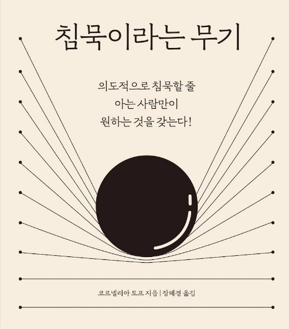

뉴스레터 / BOOKER-LIST
01.침묵이라는 무기
말과 침묵 사이의 적절한 비율을 두는 방법
주말까지 D-3 우리 힘..내요!!
의도적으로 침묵할 줄 아는 사람만이 원하는 것을 갖는다!
침묵이라는 무기코르넬리아 토프 지음

가만히 나의 마음과 대화하다 보면, 잡생각들이 떠올라 얼른 유튜브를 켜서 이 생각을 없애고 싶을 수도. 조금 있다 만날 친구와 무엇을 먹을지 고민을 하기도 하죠.
바쁜 출퇴근을 반복하다 보면, '아 조용한 어디 가서 가만히 있고 싶다'라는 생각 들지 않나요?
외부의 정적만을 바란다면 지금 당장 화장실에 앉아도 충분히 가능합니다.
하지만 우리가 정말 필요한 것은 "내면의 침묵" 이에요.
[ 잠깐! 설문조사 TIME ]
Q. 직장에서 하고 싶은 말을 못했을 때 느꼈던 스트레스의 정도는?
Q. 상사가 잔소리를 하는데, 무슨 말을 하는지 이해가 되지 않았던 적이 있나요?
NO
YES
Q. 나를 괴롭히는 모든 사람에게 하고 싶은 말이 있나요?
지금 들리는 음악소리, 라디오 소리 모두 끄고 완벽한 정적 속에서 1분만 있어볼까요?
가만히 나의 마음과 대화하다 보면, 잡생각들이 떠올라 얼른 유튜브를 켜서 이 생각을 없애고 싶을 수도. 조금 있다 만날 친구와 무엇을 먹을지 고민을 하기도 하죠.
수 천명의 직원을 거느리고 매일 수백억 달러어치의 계약을 성사시키는 경영자에게 불가능한 것이 하나 있다고 해요.그것은 바로 TV, 노트북, 휴대폰이 없는 방에 아무것도 하지 않고 홀로 앉아있는 것.
왜 우리는 침묵에 익숙하지 않을까요?
고요함을 필요로 하면서도 고요함을 견디지 못하기 때문
바쁜 출퇴근을 반복하다 보면, '아 조용한 어디 가서 가만히 있고 싶다'라는 생각 들지 않나요?
외부의 정적만을 바란다면 지금 당장 화장실에 앉아도 충분히 가능합니다.
하지만 우리가 정말 필요한 것은 "내면의 침묵" 이에요. 바쁘게 하루를 보내다 퇴근을 하면 몰려오는 씁쓸하고 고요한 시간이 싫어서 차에 타자마자 라디오를 틀고,
집에 도착하자마자 보지도 않는 TV를 켜 외롭지 않도록 환경을 만들어 위안을 얻기도 합니다.-
이번 코로나바이러스로 집에서 오랜 시간 동안 혼자와의 시간을 보내려니 무엇을 할 때 행복했었는지, 성취감을 느꼈던 적이 있었는지에대해 꽤 오랫동안 고민했었어요.
저는 10시에 출근을 해서, 밤 10시에 퇴근을 하는 직장인입니다. 12시간을 직장에서 무슨 일을 했었나 생각을 해보니, 그냥 일만 했더라고요.
출근해서 일말고 할게 뭐가 있냐고 생각하시겠지만, 직장안에서 정체성을 잃은 채 일을 하게되면 사실은 제가 일을 하는게 아니라 일이 저를 움직이게 하는 것이죠.
나의 감정에 신경 쓸 겨를 없이, 상사의 눈치를 보고 동료의 기분을 맞춰주느라 내가 지금 힘든 상태인지, 배가 고픈 건지,행복한 건지도 모른 채로 말이죠.
'아무리 좋아하는 일이어도, 그게 직업이 되면 싫어진다'라는 말을 들어보신 적 있으신가요? 요리가 좋아서 시작을 했지만, 결과물에 대해 받는 주관적인 평가들과, 제가 좋아하는 맛이 아닌 평균의 입맛에
맞추어 음식을 내야 한다는 것이 모여 요리하는 것이 "돈벌이"를 하는 수단으로 변해버린 듯했어요.
출근해서 일말고 할게 뭐가 있냐고 생각하시겠지만, 직장안에서 정체성을 잃은 채 일을 하게되면 사실은 제가 일을 하는게 아니라 일이 저를 움직이게 하는 것이죠.
나의 감정에 신경 쓸 겨를 없이, 상사의 눈치를 보고 동료의 기분을 맞춰주느라 내가 지금 힘든 상태인지, 배가 고픈 건지,행복한 건지도 모른 채로 말이죠.
'아무리 좋아하는 일이어도, 그게 직업이 되면 싫어진다'라는 말을 들어보신 적 있으신가요? 요리가 좋아서 시작을 했지만, 결과물에 대해 받는 주관적인 평가들과, 제가 좋아하는 맛이 아닌 평균의 입맛에
맞추어 음식을 내야 한다는 것이 모여 요리하는 것이 "돈벌이"를 하는 수단으로 변해버린 듯했어요.